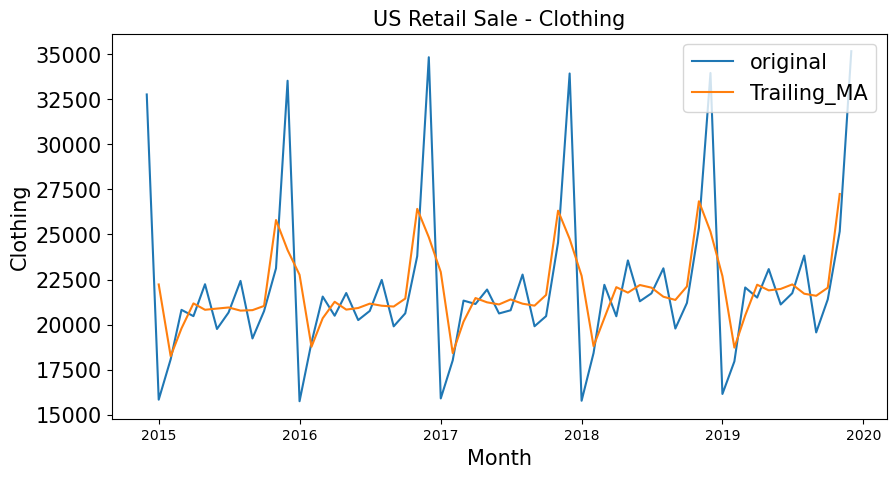
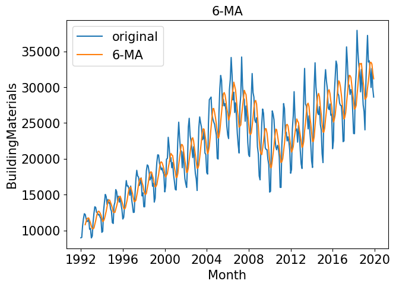
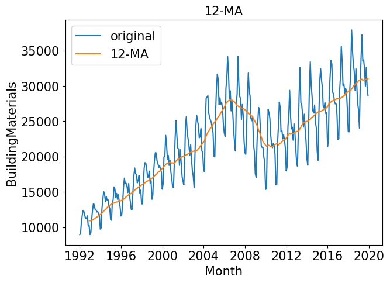

Chương 3 Smoothing
Kỹ thuật làm mịn là một trong các kỹ thuật tiền xử lý dữ liệu để loại bỏ các nhiễu trong dữ liệu. Việc làm mịn dữ liệu giúp thể hiện rõ tính mùa vụ của dữ liệu và giúp đơn giản hóa các mô hình dự đoán.
Các kỹ thuật làm mịn dữ liệu bao gồm:
- Làm mịn trung bình trượt (Moving Average Smoothing)
- Làm mịn cấp số nhân (Exponential smoothing)
3.1 Moving Average Smoothing
Có 2 loại trung bình trượt : Centered MA và Trailing MA
3.1.1 Centered Moving Average
Với trung bình trượt với cửa sổ trượt \(k\) bằng 3 ta có:
\[\begin{align} \Large \bar{y}_{T} = \frac{y_{T+1} + y_{T} + y_{T-1}}{3} \end{align}\]
Tổng quát hơn
\(\begin{align} \Large \bar{y}_{T} = \frac{1}{m} \sum_{j=-m}^{m}{y_{T+j}} \end{align}\)
Trong đó \(k = 2m + 1\)
Phương pháp này sử dụng giá trị tương lai \(y_{T+1}\) do đó không áp dụng được vào các mô hình dự báo. Phương pháp dùng để thống kê mô tả dữ liệu, là một phương pháp để loại bỏ xu hướng và tính mùa vụ của Time Series
3.1.2 Trailing Moving Average
Với trung bình trượt với cửa sổ trượt \(k\) bằng 3 ta có
\(\begin{align} \Large \bar{y}_{T} = \frac{y_{T} + y_{T - 1} + y_{T - 2}}{3} \end{align}\)
Tổng quát hơn
\(\begin{align} \Large \bar{y}_{T} = \frac{1}{k} \sum^{k}_{i=1}{y_{T-i+1}} \end{align}\)
Phương pháp này chỉ sử dụng dữ liệu quá khứ nên có thể áp dụng cho việc dự báo các giá trị tương lai
3.1.3 Ví dụ
Dưới đây là ví dụ về số Sales quần áo của US
df = pd.read_csv('../data/us-retail-sales.csv')
df['lag_1'] = df['Clothing'].shift(1)
df['lag_2'] = df['Clothing'].shift(2)
df['lead_1'] = df['Clothing'].shift(-1)
df['Centered_MA'] = (df['Clothing'] + df['lead_1'] + df['lag_1'])/3
df['Trailing_MA'] = (df['Clothing'] + df['lag_1'] + df['lag_2'])/3 Month Clothing lag_1 lag_2 lead_1 Centered_MA Trailing_MA
275 2014-12-01 32760 NaN NaN 15840.0 NaN NaN
276 2015-01-01 15840 32760.0 NaN 18079.0 22226.333333 NaN
277 2015-02-01 18079 15840.0 32760.0 20819.0 18246.000000 22226.333333
278 2015-03-01 20819 18079.0 15840.0 20470.0 19789.333333 18246.000000
279 2015-04-01 20470 20819.0 18079.0 22239.0 21176.000000 19789.333333
... ... ... ... ... ... ... ...
331 2019-08-01 23829 21742.0 21116.0 19567.0 21712.666667 22229.000000
332 2019-09-01 19567 23829.0 21742.0 21400.0 21598.666667 21712.666667
333 2019-10-01 21400 19567.0 23829.0 25170.0 22045.666667 21598.666667
334 2019-11-01 25170 21400.0 19567.0 35157.0 27242.333333 22045.666667
335 2019-12-01 35157 25170.0 21400.0 NaN NaN 27242.333333Ta cũng có thể sử dụng phương thức rolling() trong Pandas
df['Centered_MA'] = df['Clothing'].rolling(window=3, center=True).mean()
df['Trailing_MA'] = df['Clothing'].rolling(window=3, center=False).mean()Để visualize dữ liệu, ta có thể dùng seaborn
import seaborn as sns
import matplotlib.pyplot as plt
plt.figure(figsize=(10,5))
plt.title("US Retail Sale - Clothing", fontsize=15)
sns.lineplot(x='Month', y='Clothing', data=df, label='original')
# sns.lineplot(x='Month', y='Centered_MA', data=df, label='Centered_MA')
sns.lineplot(x='Month', y='Centered_MA', data=df, label='Trailing_MA')
plt.xlabel('Month',fontsize=15)
plt.yticks(fontsize=15)
plt.ylabel('Clothing',fontsize=15)
plt.legend(fontsize=15)
Với dữ liệu bao gồm xu hướng và mùa vụ, việc gia tăng cửa sổ trượt giúp loại bỏ tính mùa vụ và chỉ để lại tính xu hướng. Ví dụ dưới đây cho dữ liệu Số Vật liệu xây dựng đã sử dụng ở Mỹ
với các tham số \(k =6\) và \(k=12\)
| \(k=6\) | \(k=12\) |
|---|---|
|  |  |